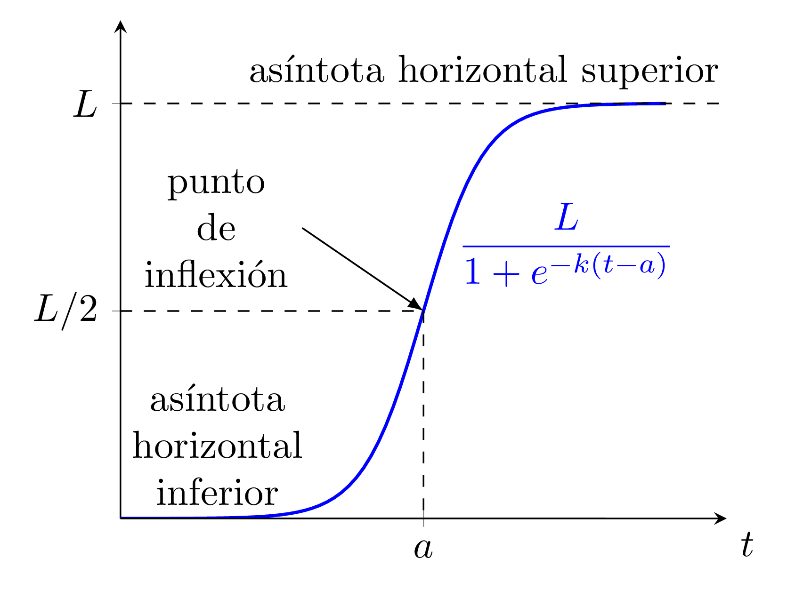
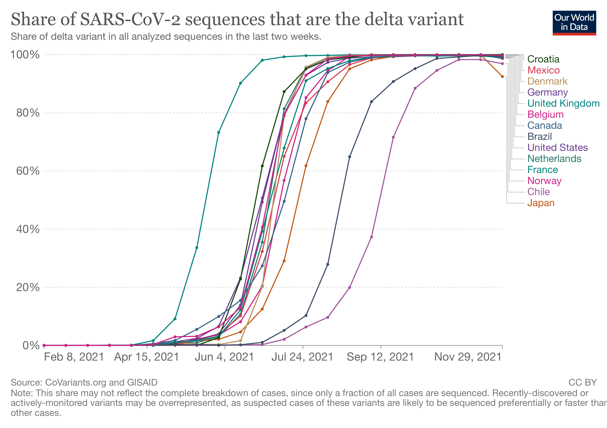

En esta entrada de blog explico cómo diseñé un sistema con TikZ para generar un tipo de diagramas matemáticos de manera eficiente y fácil de mantener. TikZ un lenguaje de programación para crear diagramas matemáticos mediante código. El sistema es una plantilla para construir rectas numéricas dobles, tipo de diagrama muy utilizado en recursos educativos de matemáticas modernos para apoyar el razonamiento proporcional (por ejemplo, porcentajes, razones o recetas).
El objetivo de esta entrada es mostrar cómo estas rectas numéricas dobles se pueden generar “automáticamente”, usando código de programación breve y flexible, que produce diagramas visualmente consistentes y permite centrar la atención en las ideas matemáticas. Una estructura visual coherente facilita el aprendizaje y el razonamiento matemático.
La ley de Zipf dice que el tamaño de las ciudades en una región sigue, a menudo sorprendentemente bien, una ley de potencias sencilla:
$$
P(r) = \frac{C}{r^{\alpha}}
$$
En esta fórmula, $P(r)$ es la población de la ciudad en el puesto $r$ (ordenadas de mayor a menor población), y $C$ y $\alpha$ son constantes que dependen de la región.
Lo que esto nos dice es que la población de la ciudad más grande (puesto $r=1$) es aproximadamente $P(1)=C/1^\alpha=C$, la población de la segunda ciudad más grande (puesto $r=2$) es $P(2)=C/2^\alpha$, la de la tercera es $P(3)=C/3^\alpha$, y así sucesivamente. Los datos de muchos países sugieren que $\alpha \approx 1$, aunque en la práctica este valor puede variar según el país o la región.
Durante los últimos meses he estado experimentando con la creación de herramientas web pequeñas, útiles y totalmente autocontenidas con la ayuda de ChatGPT. Todo integrado en un solo archivo HTML. Este es un ejemplo,
un visualizador interactivo de LaTeX con MathJax: una página simple pero muy funcional, que se adapta bien a computadores y dispositivos móviles, y que es interactiva. Uno escribe LaTeX y ve en tiempo real cómo se ve el LaTeX compilado.
En 2012, creé la siguiente animación que muestra los ceros complejos de los polinomios de Taylor de la función exponencial $e^z$. En esta entrada, explicaré qué significa y por qué es interesante.
También mostraré el código en
Sage para recrear la animación (que originalmente creé en Mathematica en 2012). A diferencia de Mathematica, que no es gratuito ni de código abierto, Sage es un sistema de software matemático de código abierto basado en Python que se construye sobre muchos paquetes de código abierto existentes.
En esta entrada, mostraré cómo recreé una hermosa imagen con espirales de un libro para colorear inspirado en las matemáticas, usando funciones complejas y transformaciones de Möbius.
Esta animación es un archivo gif que se creó con LaTeX y TikZ (un lenguaje de programación para producir imágenes dentro de LaTeX). Había intentado sin éxito, lograr hacer algo de este estilo con TikZ durante mucho tiempo, y finalmente descubrí cómo hacerlo. En esta entrada de blog describo todos los pasos.
Había dos aspectos “complicados” que había que resolver:
LaTeX y TikZ to tienen funcionalidad para graficar curvas algebraicas (gráficas de ecuaciones implícitas de la forma $ f (x, y) = g (x, y) $ con polinomios $ f $ y $ g $) ya que esto requiere cálculos numéricos con alta precisión en los que LaTeX no es muy bueno (al ser, después de todo, un sistema de composición de textos).
Esta es otra entrada sobre Origami. Me interesé sobre cómo hacer diagramas de instrucciones de Origami en
otra entrada, y decidí intentar hacer los diagramas de instrucciones para una flor que inventé hace bastante tiempo.
El hacer estos diagramas me ha ayudado a apreciar más estos diagramas de Origami. ¡Es todo un arte! (¡tanto el Origami, como el hacer los diagramas de instrucciones!).
Ahora me doy cuenta que hacer estos diagramas involucra pensar bastante. En particular:
Tratando de recordar cómo se hace el avión de papel con el récord mundial de distancia, ¡me inventé un avión que vuela muy bien!
Es bastante parecido al avión del récord, pero no es el mismo. Creo que la distribución del peso es distinta, por lo que puede que sea mejor planeando (¿más no rompiendo records?). Planea muy bien.
Estas son las instrucciones que cree usando
IPE, un editor de imágenes vectoriales open source, con soporte para LaTeX, que disfruto mucho. También se puede descargar en formato
pdf.
TikZ es un lenguaje de programación para producir imágenes que funciona a partir de
LaTeX. Uno ejecuta PdfLateX en un archivo fuente de TikZ (un archivo de
texto sin formato) y obtiene como resultado un pdf de la imagen que describe el código.
Para ver un ejemplo detallado, puede ver esta
entrada en la que muestro el código TikZ de la siguiente imagen, o esta otra
entrada en la que discuto en más detalle la sintaxis de TikZ para crear la gráfica de una función con etiquetas matemáticas en LaTeX.
Los Recursos Educativos de Illustrative Mathematics (Matemáticas Ilustrativas) son una colección de planes de lecciones de Matemáticas, problemas de práctica y materiales de apoyo familiar para todos los grados K–12 del currículo especificado por el
Common Core State Standards de Matemáticas en Estados Unidos.
Estos recursos fueron creados durante los años 2016–2021 y tienen la muy buena Licencia de uso
Creative Commons Attribution 4.0 (la misma de este blog) que permite compartirlos y adaptarlos libremente siempre y cuando uno mantenga la misma Licencia y se le dé debido crédito a los creadores.
Desde el inicio de la pandemia de Covid-19 me ha estado persiguiendo el asunto de interpretar de manera correcta los resultados de las pruebas de laboratorio de Covid-19.
Sabía que la probabilidad de que una prueba de laboratorio de Covid-19 diera información correcta depende de la proporción de la población que se encuentra infectada en el momento que se hizo la prueba, pero no conocía los detalles ni entendía por qué podía pasar esto. Cada vez que trataba de leer al respecto terminaba leyendo artículos en internet con muchas tablas y números inventados de casos positivos y negativos que no me ayudaban a entender el asunto con claridad.
Como parte de mi trabajo con el Mathematics Consortium Working Group (he estado escribiendo actividades relacionadas con el uso de datos reales y hojas de cálculo para nuestro
libro de Matemáticas Aplicadas), descubrí que la concentración de $\text{CO}_2$ en el aire, que se lleva midiendo en el Observatorio Mauna Loa en Hawaii desde 1950, se puede modelar sorpresivamente bien con un modelo “super-exponencial” de la siguiente forma:
$$f(t)=P_0(b+mt)^t.$$
Después, aún convencido de lo preocupante y serio que era esto (el crecimiento super-exponencial es tan alarmante como suena), descubrí que también se podía encontrar un modelo “casi exponencial” que se ajustaba igual de bien a los datos. Este modelo asume que se dió crecimiento exponencial a partir de un nivel $C$ de base, en vez de iniciar en $0$, así:
$$g(t)= C+Ba^{t}.$$
Es posible que este modelo tenga más sentido que el super-exponencial, porque es razonable asumir que los niveles de $\text{CO}_2$ en el aire eran constantes antes de que la humanidad comenzara a tener un impacto notorio en la atmósfera y después empezaran a crecer, al parecer de forma exponencial. Entonces, puede que la concentración de $\text{CO}_2$ sí esté creciendo de forma exponencial, lo cual es muy alarmante, pero no tan alarmante como crecimiento super-exponencial.
Hace poco recordé el mensaje de Arecibo y descubrí que el
artículo de Wikipedia es excelente. La versión en
inglés es un poco más completa. Al leer sobre el significado de cada parte del mensaje, decidí que quería una copia impresa para mi casa. En esta entrada de blog describo cómo generé una imagen de buena calidad para impresión.
Este es el mensaje:
Mensaje de Arecibo. Imagen de
Wikipedia elaborada por Arne Nordmann (norro), CC BY-SA 3.0
Illustrative Mathematics me invitó a participar en un seminario web (webinar) por el trabajo que hice dirigiendo la traducción al español de sus textos escolares de matemáticas (ver
aquí). Querían que compartiera con los asistentes detalles del proceso de traducción y explicara por qué una traducción palabra por palabra (tipo Google translate) era insuficiente.
Como preparación, decidí escribir esta entrada de blog sobre el proceso de traducción.
Los textos escolares de Illustrative Mathematics (Matemáticas Ilustrativas) consisten en una propuesta de actividades para la clase día a día, junto con las guías del docente correspondientes, problemas de práctica (tareas) y materiales de apoyo para las familias. Fueron creados durante los años 2016-2021 con el apoyo de
Open Up Resources y tienen la muy buena licencia
Creative Commons Attribution 4.0 (la misma de este blog) que permite compartir (copiar y redistribuir el material en cualquier medio o formato) y adaptar (remezclar, transformar y construir a partir del material
para cualquier propósito). Son de muy alta calidad, pues promueven el aprendizaje matemático profundo a través de la resolución de problemas y han sido
muy bien calificados por entidades independientes sin ánimos de lucro. Se puede obtener más información sobre estos recursos en la página oficial de
Illustrative Mathematics y en
Open Up Resources.
Prometí en
otra entrada de blog que mostraría el código en TikZ que produce la siguiente figura:

Lo que me gusta mucho de TikZ y su paquete pfgplots es que la curva en la figura es de verdad una curva logística y no solo una curva de Bezier o un spline que intenta imitar la forma de una logística. Específicamente, la función cuya gráfica aparece en la figura está dada por
$$
f(t) = \frac{1}{1+e^{-4(x-2.5)}}.
$$
Si uno grafica esta función en TikZ con mínimos ajustes, el resultado es este:
Hoy, como parte de mi trabajo, me topé con el sorprendente hecho de que en muchos países el porcentaje de los casos Covid-19 que son de la variante delta creció de 0% a 100% de forma casi perfectamente logística durante el año 2021.
La siguiente gráfica, de la cual surge todo esto, se puede ver de forma interactiva al seguir este link de
Our World In Data.

Imagen descargada de Our World in Data, acceso abierto bajo la licencia Creative Commons BY.
Este blog no se encuentra en una plataforma comercial para bloggers. Es lo que se llama técnicamente un “sitio estático”, lo cual significa que es solo una colección de archivos HTML que están vinculados entre sí, junto con algunos otros archivos que dan formato (por ejemplo, archivos css). Como tal, este blog se puede alojar en cualquier lugar y no está atado a ninguna plataforma en particular. Además, se creó con una fantástica herramienta de código abierto llamada
Hugo. En esta entrada de blog explico cómo lo creé.
Como menciona Joe Harris en su libro “Algebraic Geometry: A First Course”, la curva llamada la Twisted Cubic es “el primer ejemplo de todos de una variedad concreta que no es una hipersuperficie, un espacio lineal o un conjunto finito de puntos”.
En el espacio afín, está dado por la imagen de
$$t\mapsto(t,t^2,t^3).$$
Mientras solucionaba todos los ejercicios del libro (¡todavía estoy en esas!), decidí que quería hacer una figura de Tikz de la curva para aprender a hacer figuras 3D con Tikz.